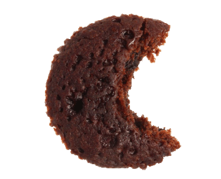

Type food you'd like to check in here...


# GLYCEMIC INDEX is a number
(mostly from 0 to 100) saying how much your blood sugar will increase after consuming certain food. 100 is pure glucose. The higher the number, the higher danger of obesity and diabetes.
....Green means this food has LOW glycemic index, and will not cause substancial increase in your blood sugar.
....Orange means this food has MEDIUM glycemic index, it will cause some increase in your blood sugar, but within safe limits. It still can be consumed as long as it's with moderation.
....Red means this food has HIGH glycemic index. It will cause significcant increase in your blood sugar. In long run, it is likely to lead to obesity and diabetes.